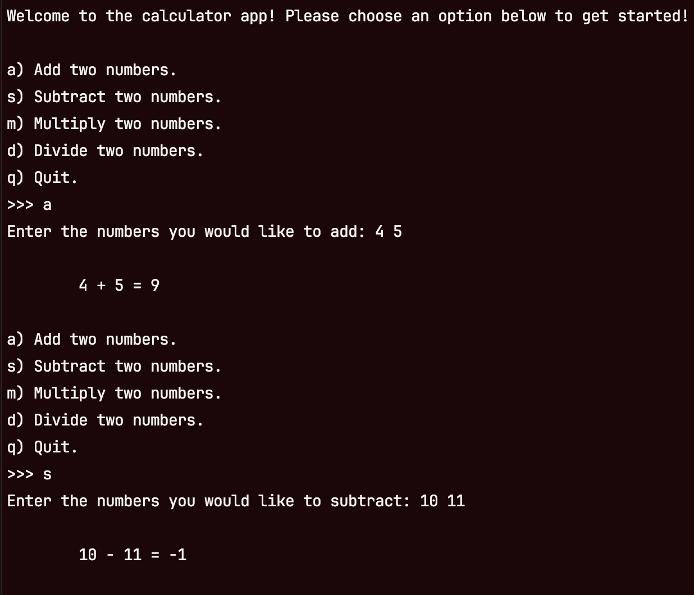
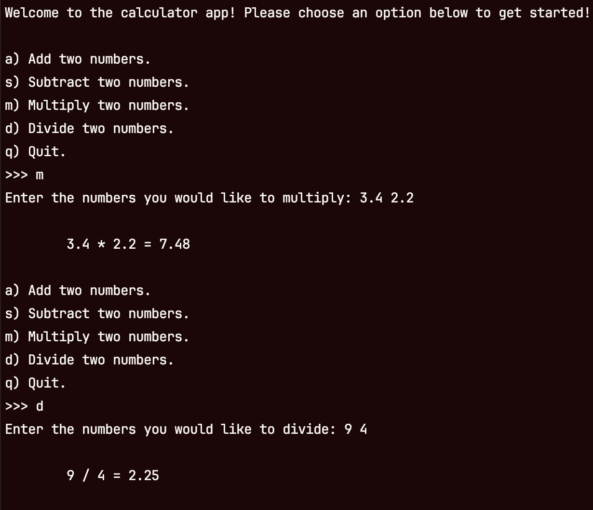
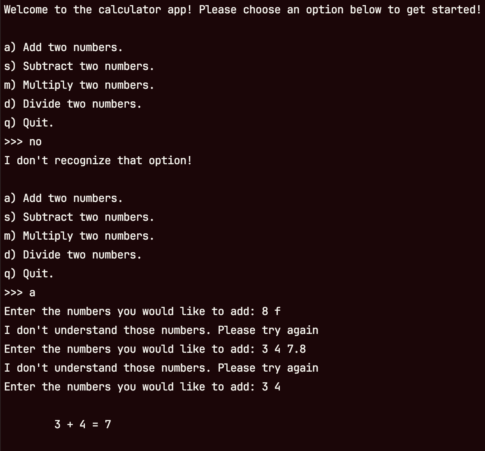
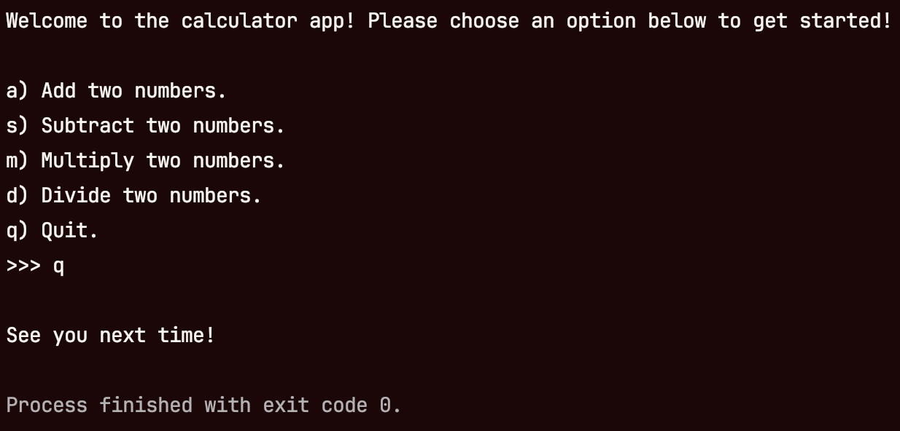

In this project, you’ll build a basic calculator application! This project will help you put everything you’ve learned so far together. You calculator needs to support the following operations as shown in the images below.
- Addition
- Subtraction
- Multiplication
- Division
Your application also needs to allow the user to quit. Pay special attention to how the arguments for each operation are accepted. Think about what needs to be done to make the inputs robust!
 Example addition and subtraction
 Example multiplication and division
 Example bad input
 Example quitting